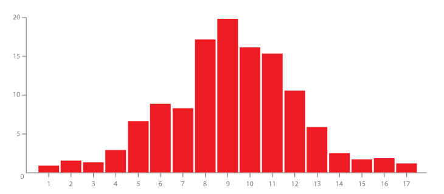
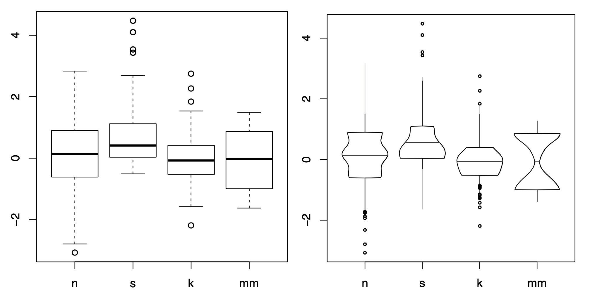
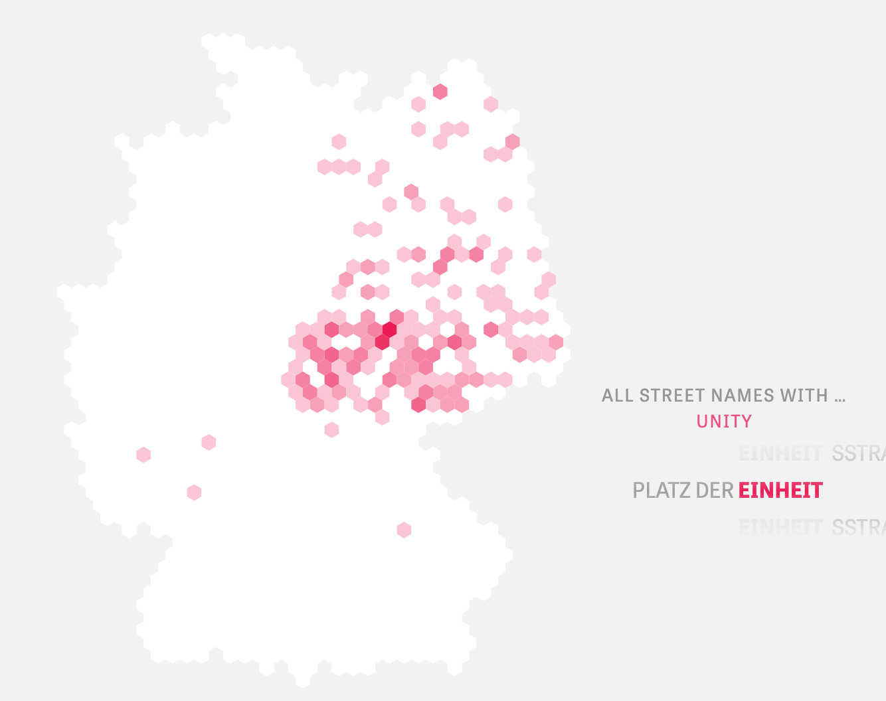
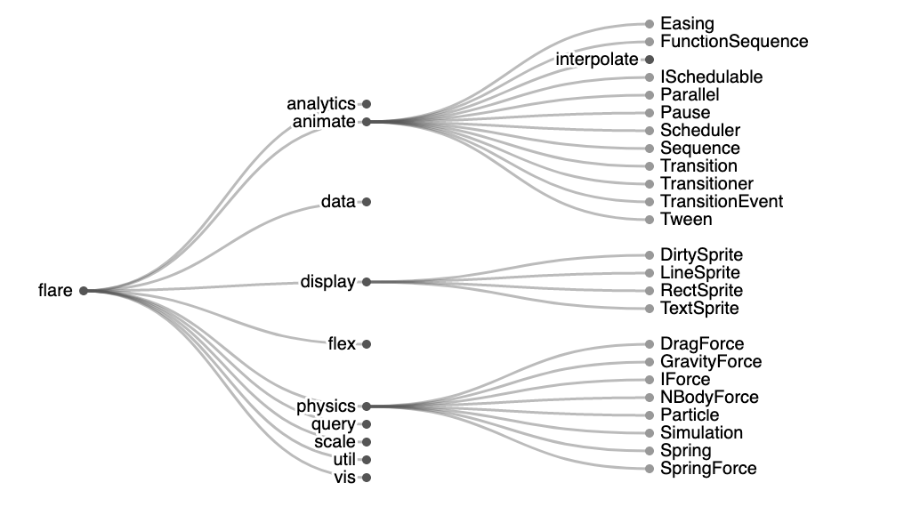
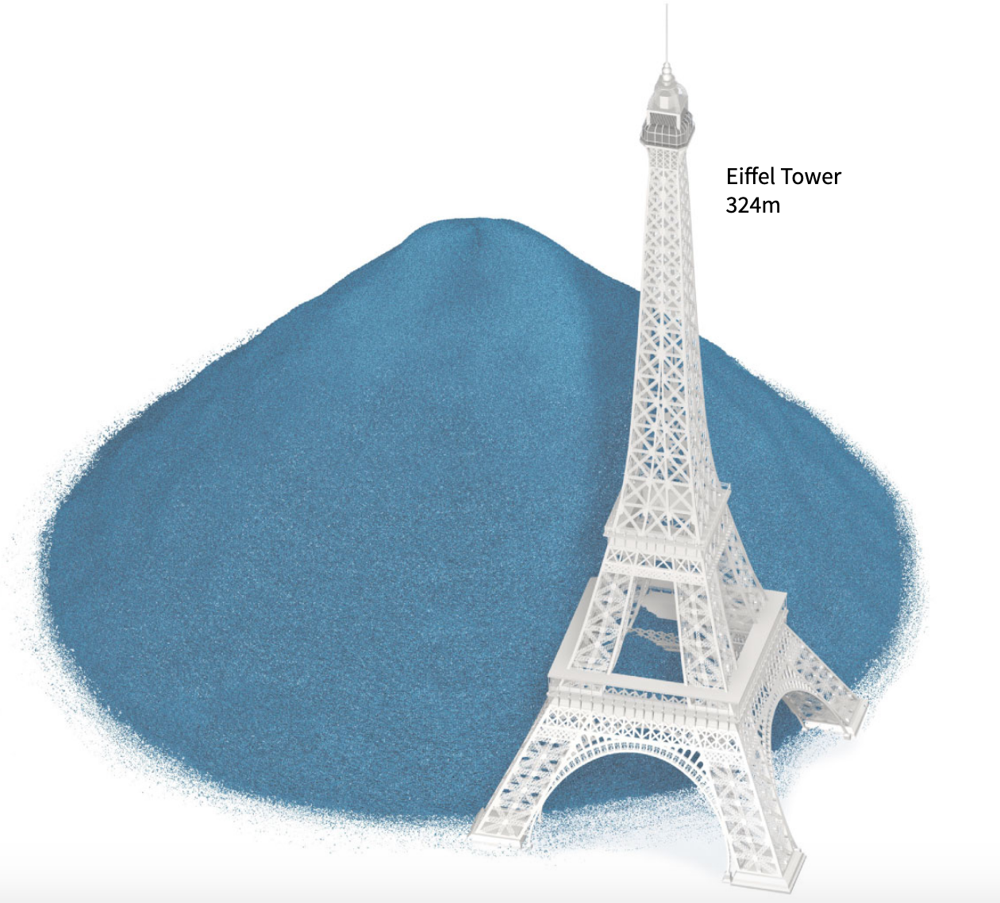

¡Hola 👋! Espera mientras comienza la sesión.
Antes que todo, ¿cómo están?
Visualización de Información
IIC2026 2020-2
Reducción de datos
Visualización de Información
IIC2026 2020-2
Repaso
Repaso
1. Reducción de datos
2. Agregación
3. Reducción de dimensionalidad
Estrategias de manejar complejidad de un dataset
Derivación de datos
Manipulación de vista
Facet de vistas
Reducción de datos
Reducción de datos
Decisiones de diseño que involucran reducir (o incrementar) la cantidad de información mostrada en una visualización.
Puede aplicarse tanto sobre ítems como sobre atributos.
Filtración
Agregación
Filtración de ítems y atributos

(Fuente: Gapminder )
Agregación de ítems: histograma

(Fuente: Histogram - DataVis Cataloga )
Agregación de ítems: histograma

(Fuente: Population pyramid - DataVis Cataloga )
Agregación de ítems: caja y bigotes

(Fuente: Box and Whisker Plot - DataVis Cataloga )
Agregación de ítems: violín

(Fuente: Violin plot - DataVis Cataloga )
Agregación espacial

(Fuente: Streetscapes )
Filtración y agregación cómo exploración
(Fuente: Collapsible Tree - Observable )
Filtración y agregación cómo exploración

(Fuente: Film Dialogue - Pudding )
Reducción de dimensionalidad
Transformación de datos multidimensionales a datos de pocas dimensiones sin perder las caracterizaciones originales.

(Fuente: Research Gate)
¿Más dudas?
¡Visualización del día!
Propuesto por persona anónima.
(Fuente: Drowning in plastic )
Próximos eventos:
Jueves 5 de noviembre termina plazo de Entrega 3 y se publica Hito 3.
Se vienen sesiones sobre: Brushing, agregación y vistas en D3.js (jueves 5) .